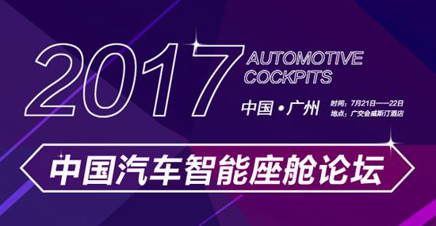
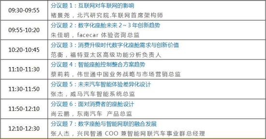
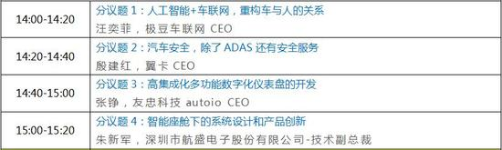
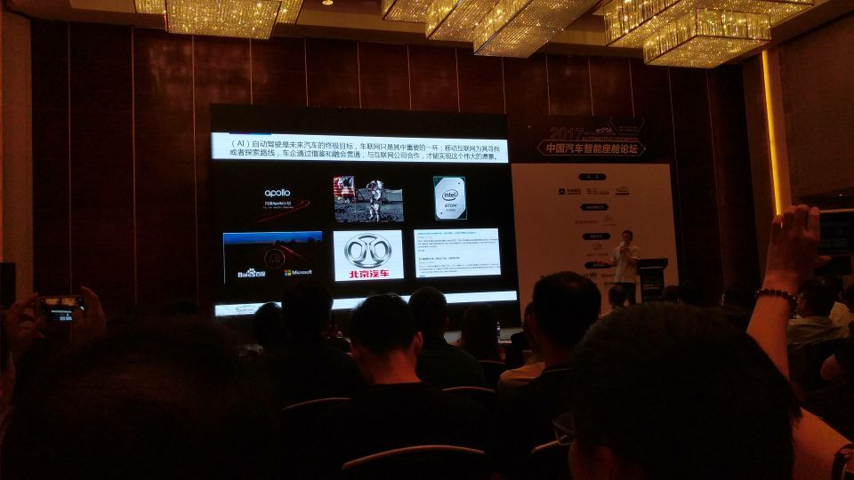
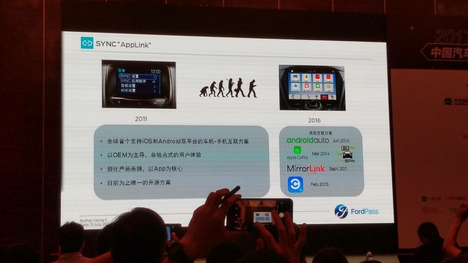

团队受邀参加2017中国汽车智能座舱论坛
2017年7月22日，在接触北汽全新仪表盘设计之后，我们收到了2017中国汽车智能座舱论坛的邀请，出席了本次论坛。
数字化技术「入侵」汽车行业之后，给座舱带来的改变最为直观。车内的显示系统正在朝多元化发展，车联网带来的大量信息显示也正在层级化，驾驶体验这个词不再仅仅是与车辆的动力性能相关，「科技感」也成为重要的评判标准。
新的变化正在发生。2017年7月21-22日，时值第二届中国（广州）国际新能源、节能及智能汽车展览会，车云网联合Facecar和中机国际共同主办2017汽车智能座舱技术论坛。大会特邀国内外整车、高校、核心零部件、设计开发及创新创业企业负责人，通过七大议题，从智能座舱的总体趋势发展以及各大分支技术，研讨应对变化之道。

在第一天的上午，「趋势」将是核心话题
作为汽车上与消费电子最为接近的部分，互联网，尤其是移动互联网的发展，对座舱的影响最为显著。但汽车与消费电子的迭代速度有不可逾越的鸿沟，所以必须思考的是，如何对待这些影响，并在其中找到一条适合的发展道路？
回答这个问题，需要对「变化」理解得更加透彻：汽车整体都在发生变化，而座舱则是与用户关联最为紧密的部分，所有新技术要在这里融合。
也需要对「用户」研究得更彻底：技术要如何服务于需求？同质化的技术发展下，如何在用户体验上体现出品牌差异？
在这个议题下，来自北汽、福特、东南与威马的产品和技术负责人将会分享他们对这些问题的理解，而供应商代表伟世通、Facecar则将带来新趋势的解读。
谈完趋势，让我们将话题分割到六大分支技术上：
1.仪表盘与座舱数字化应用
数字化给仪表盘带来的最大变化在于灵活可控。布局不再是固定搭配，显示的信息内容与方式开始差异化、定制化乃至个性化，仪表盘的功能正在日益丰富。
从硬件上来说，新的电子显示技术诸如OLED、3D正在被引入，除了车规化之外，还要考虑的是如何将仪表盘的设计与整体座舱设计相结合；从软件上来说，显示内容的定制化将衍生出个性化，用户是否要掌握个性化的主动权也是车企正在思考的。
在这个话题上，我们请来了新锐的创业公司极豆、翼卡、友衷来谈人车关系和用户服务，也有老牌的汽车电子巨头航盛带来最新的系统设计及产品创新思考。

2.以用户为中心的HMI设计&智能出行服务
HMI在座舱设计中是一个泛话题，几乎处处都涉及到HMI，但是单纯地讨论HMI设计并没有意义，同样需要放到对应的场景中。新的服务和技术的加入将会给HMI带来新的课题，自动驾驶需要什么样的HMI？出行服务和HMI的关系是怎样的？HMI如何与整体座舱设计的结合与反馈又将怎样处理？
学院派在HMI领域的研究比较超前，来自同济大学和华南理工大学的两位专家将为我们进行系统化的理论梳理，而作为新兴造车公司的代表，博郡汽车带来的分享则更贴近企业实务。


北汽研究院车联网首席架构师－褚景尧先生分享互联网对车联网的影响

FordPass开发经理（车载连接服务部）－范衡先生正在做分享
未来，汽车座舱与用户的关联会更加紧密，以用户体验为核心的汽车座舱设计会诞生出一批优秀的咨询互动公司。迪麦UED团队会在汽车HMI领域投入更多的精力，敬请期待我们的新作。